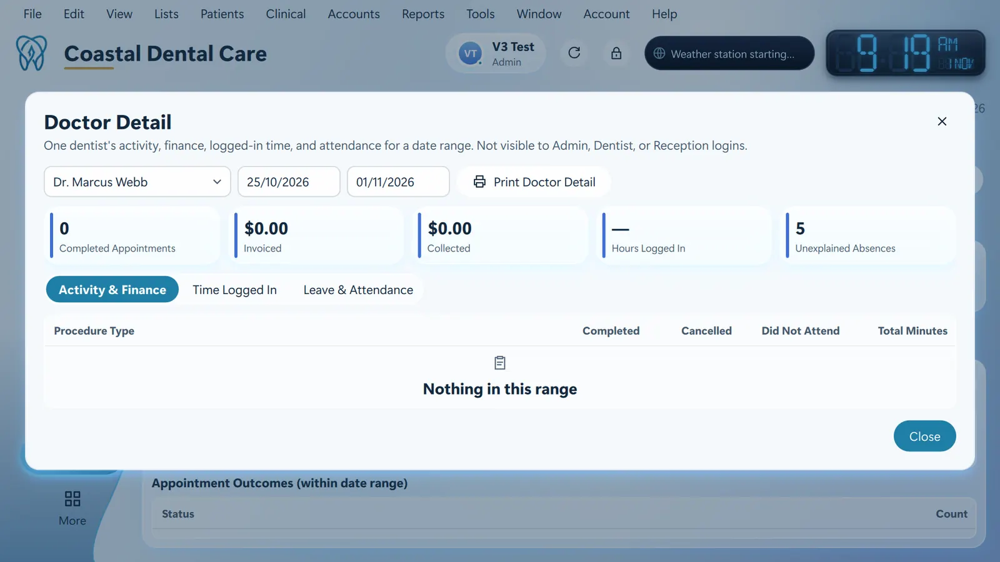
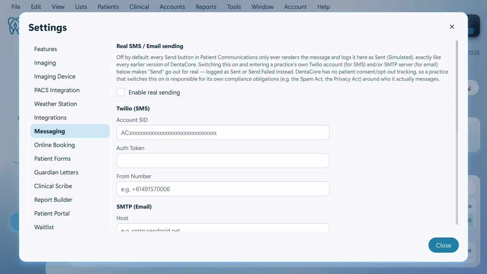
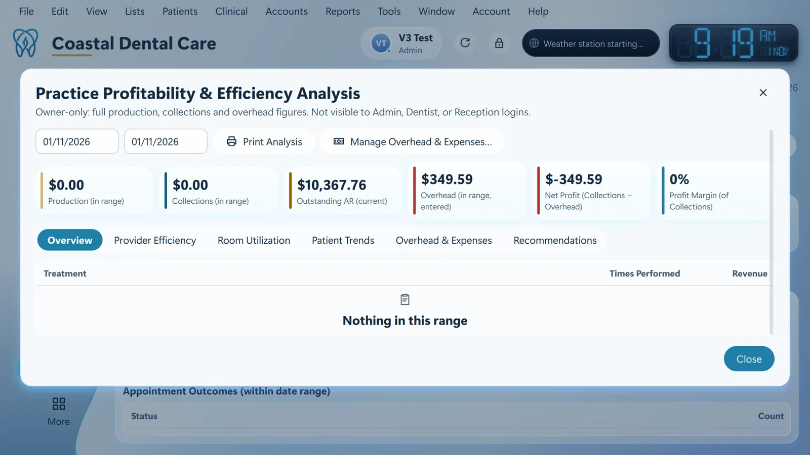
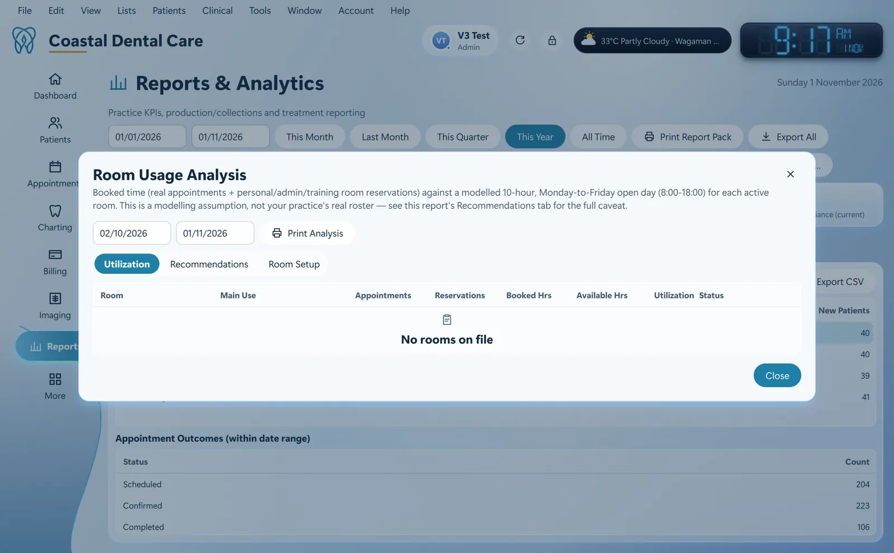
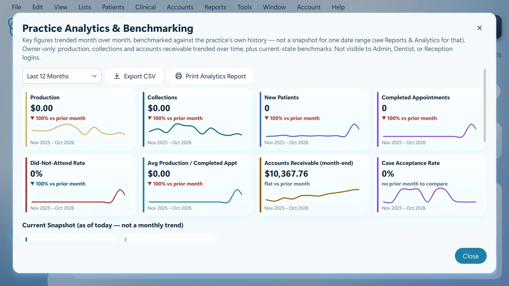

01 / 07 · Reports & analytics
Reports & Analytics
Reports
Practice-wide numbers for any date range, with quick buttons for this month, last month, this quarter, this year and all time.
- Headline figures: production, collections, outstanding, new patients, did-not-attend rate and recall compliance.
- Practice Overview: production and collections per dentist, and appointment outcomes.
- Treatment & AR: treatment volumes and accounts receivable by age.
- A dentist sees their own figures.
- Export any table to CSV, print a report pack, or export every report at once.

02 / 07 · Reports & analytics
Report builder
Reports → Ask for a Report
Ask for a report in plain words, typed or spoken, and DentaCore builds it.
- See how your question was read, correct it and run it again.
- Save reports you use often.
- Speech is transcribed on the practice's own computer.

03 / 07 · Reports & analytics
Scheduled reports
Reports → Scheduled Reports
Have the reports you need arrive on a timetable.
- Schedule any saved report.
- Manage every schedule in one place.
- Delivered by the main computer in the background.

04 / 07 · Reports & analytics
Owner-only reports
Reports (Owner login)
A level deeper, and visible only to the Owner, not even to Admin.
- Doctor Efficiency: each dentist's average chair time per procedure against the others and the practice. Exclude an unusual appointment with a reason.
- Doctor Detail: one dentist's production, collections, outcomes, hours logged in and any day with appointments but no sign-in and no approved leave.
- Practice Analytics: monthly trends in production, collections, new patients, DNA rate, recall compliance, memberships and case acceptance, each against the practice's own history.

05 / 07 · Reports & analytics
Practice profitability
Reports → Practice Profitability
Real profit, not just revenue: production minus the overheads you enter.
- Production, collections and receivables.
- Rent, wages and running costs entered once on the Overhead & Expenses tab and reused every time.
- Production per chair-hour for each dentist.
- Patient trends and written recommendations based on the numbers.

06 / 07 · Reports & analytics
Room usage
Reports → Room Usage Analysis
How well each room is used: booked minutes against the time available.
- Counts appointments and room reservations.
- Flags a room that's always idle, or always full.
- Shows each room's equipment and main use beside its figures.

07 / 07 · Reports & analytics
Consultant Brief and practice diagnostic
Reports → Consultant Brief
Findings about the practice, each with its headline, the reasoning and the numbers behind it.
- Every figure comes from the practice's own data.
- The practice diagnostic checks the practice against a set of questions and explains each result.
- The overhead worksheet keeps operating costs and commission rates.
